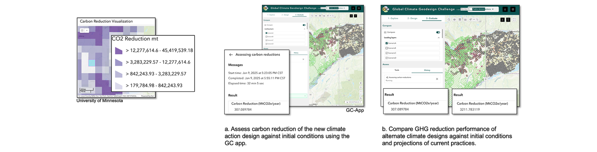

Web App
Geoprocessing Tool
Carbon Assessment Tool
Developed automated geoprocessing tool for carbon sequestration analysis using 1 km grid overlays. Integrated custom tool into Experience Builder web application enabling real-time spatial analysis for environmental decision-making. (Private client project)
ArcGIS Pro
Python
ArcPy
ArcGIS Enterprise
ArcGIS Experience Builder